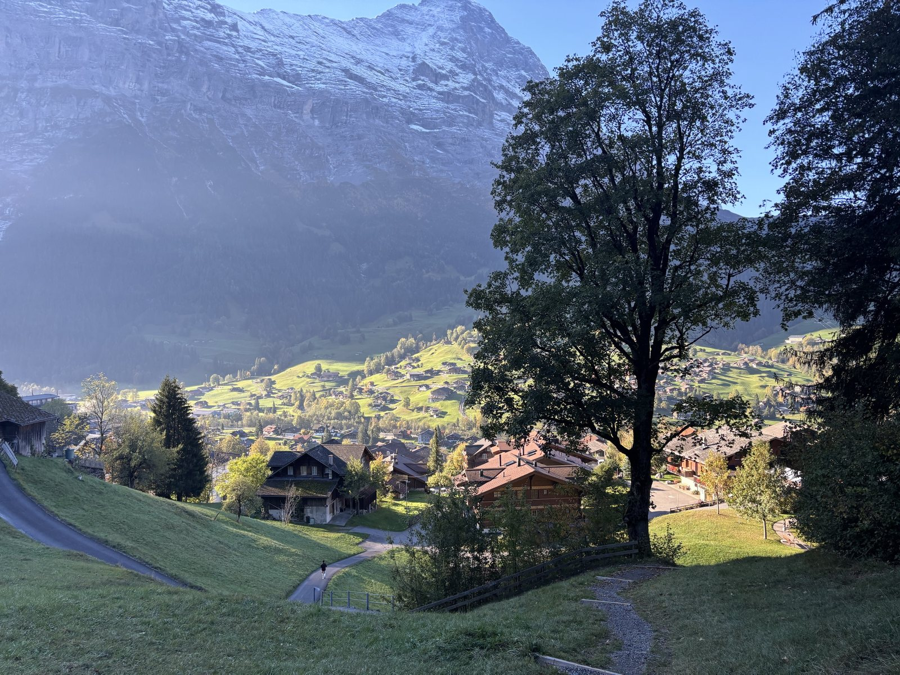
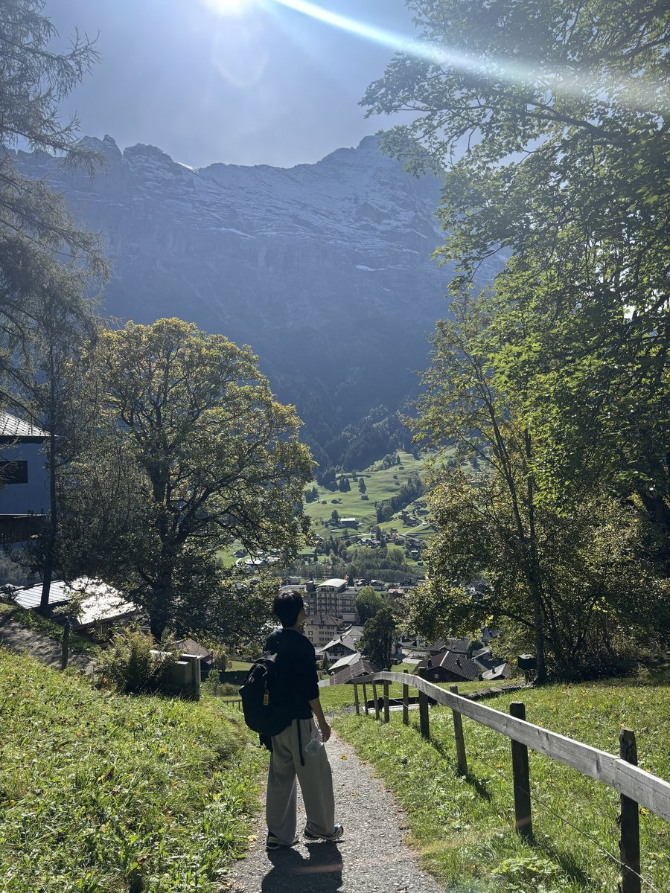
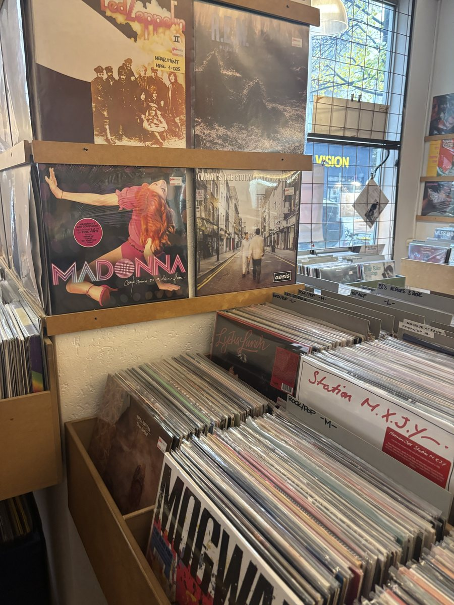

2nd Place
Creative Engineering Design Robocon
Department of Mechanical Engineering 33rd Anniversary, Seoul National University
I'm an undergraduate student in Mechanical Engineering at Seoul National University. I'm interested in designing robotic hands and in the data that drives them, in simulation and on real hardware.
From Winter Semester 2026/27 I'll be an exchange student at TU Berlin



Hardware & software
Human level grasping ability.
Interested in actuators, sensors, and new mechanisms.
Interested in using learning to control robots.
Click through for the full story on any project.
A tendon-driven prosthetic hand with a fully passive abduction degree of freedom, using two opposing torsion springs per finger, dual tendon routing.
A wearable two-IMU controller that drives a 4-DOF robotic arm in real time over ESP-NOW (subtracting one accelerometer from the other to isolate wrist motion from whole-arm motion, with no kinematic model.)
Winter Semester 2026/27 · Berlin, Germany
Technische Universität Berlin · Oct 2026 – Mar 2027 (expected)
Seoul National University
Seoul, Republic of Korea
Department of Mechanical Engineering 33rd Anniversary, Seoul National University
Taught English to elementary school students at a local community center
Subject and extracurricular mentoring for students during summer vacations